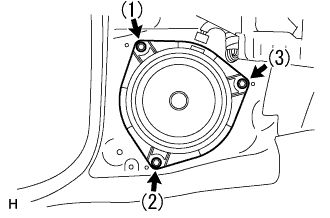

|
ツメ2箇所、クリップ1箇所のかん合をあわせ、樹脂クリップでカウルサイドトリムボードLHを取り付ける。
フロントスピーカASSY No.1(LH) 取り付け |
| 1. フロントスピーカASSY No.1(LH)取り付け |
|  |
ボルト3本で、フロントスピーカーASSY No.1 LHを取り付ける。
| 2. カウルサイドトリム ボード LH取り付け |
|
ツメ2箇所、クリップ1箇所のかん合をあわせ、樹脂クリップでカウルサイドトリムボードLHを取り付ける。
| 3. インストルメントパネルアンダ カバーSUB-ASSY NO.1取り付け |
 |
インストルメントパネル アンダカバー No.1の下部のヒンジ部のかん合させ、ツメ９箇所のかん合を合わせクリップ<a>2個でインストルメントパネル アンダカバー No.1を取り付ける。
| 4. リヤドア オープニングトリム ウェザストリップ LH取り付け |
ウェザストリップのペイントマーク(黄色および白色、どれか1箇所)とボデー側のウエザストリッツプ取り付け用切り欠き部(矢印部分)を合わせ、リヤドアオープニングトリムウエザストリップLHを取り付ける。

| 5. フロントドアスカッフ プレート LH取り付け |
 |
フロントドアスカッフプレート LH前端部のツメを差し込む。
ツメおよびクリップををかん合させ、フロントドアスカッフプレートLHを取り付ける。